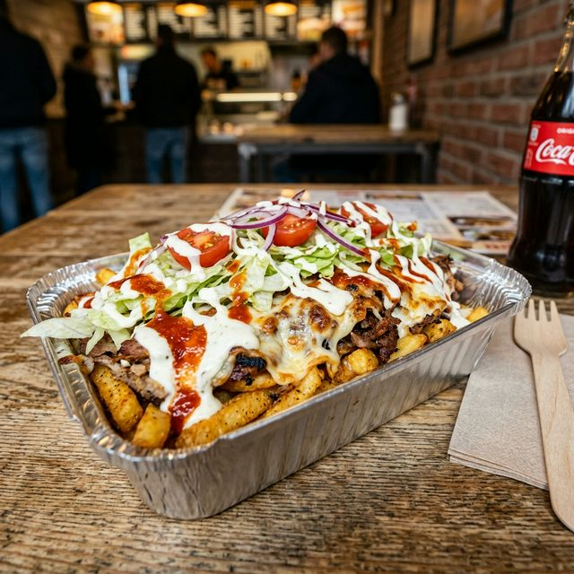

The **Kapsalon** is a Dutch food item that originated in 2003 in Rotterdam. It typically consists of a layer of french fries placed in a disposable metal take-away tray, topped with shawarma meat, covered with layers of Gouda cheese, and heated in an oven until the cheese melts.

The Recipe
- Prepare a base of crispy french fries.
- Add a layer of seasoned meat (shawarma or döner):
- Chicken Shawarma (most common)
- Lamb Döner (traditional)
- Vegan Seitan (modern twist)
- Cover with slices of Gouda cheese and broil until bubbly.
- Top with fresh iceberg lettuce, cucumbers, and tomatoes.
- Drizzle with plenty of:
- Knoflooksaus (Garlic sauce)
- Sambal (Hot chili sauce)
Watch it being made!
Regional Cultural Plates in the Netherlands
While the Kapsalon is a modern icon, the Netherlands has a rich history of regional dishes. Hover over the regions below to see more.